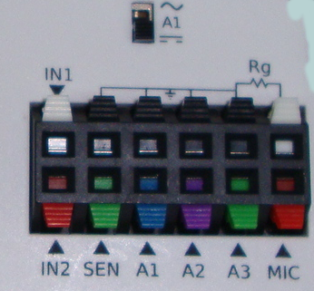

Output Terminals
The Oscilloscope program mainly functions as a four channel DSO to view inputs A1, A2,A3 and MIC.
Adjust the x-axis limit of the graph, using the Timebase Slider, generally to view several cycles of the waveform.
If the waveform is not stable, select the proper trigger source. If needed adjust the Trigger level.
The traces can be saved to a file, in text format. It is possible to take the Fourier transform and view the frequency spectrum of the input waveform.
This scope program also has control/monitor widgets on the right side panel to access most of the ExpEYES features.
The inputs A1, A2, A3 and the resistance connected to SEN are measured and displayed every second. But these readings are meaningless when AC inputs are connected.
For sinusoidal AC inputs, enable the Check-Button in front of the channel widget to view the Peak voltage and frequency.
Output Terminals

Input Terminals
The inputs A1, A2, A3 and the resistance connected to SEN are measured and displayed every second. But these readings are meaningless when AC inputs are connected. For sinusoidal AC inputs, enable the Check-Button in front of the channel widget.